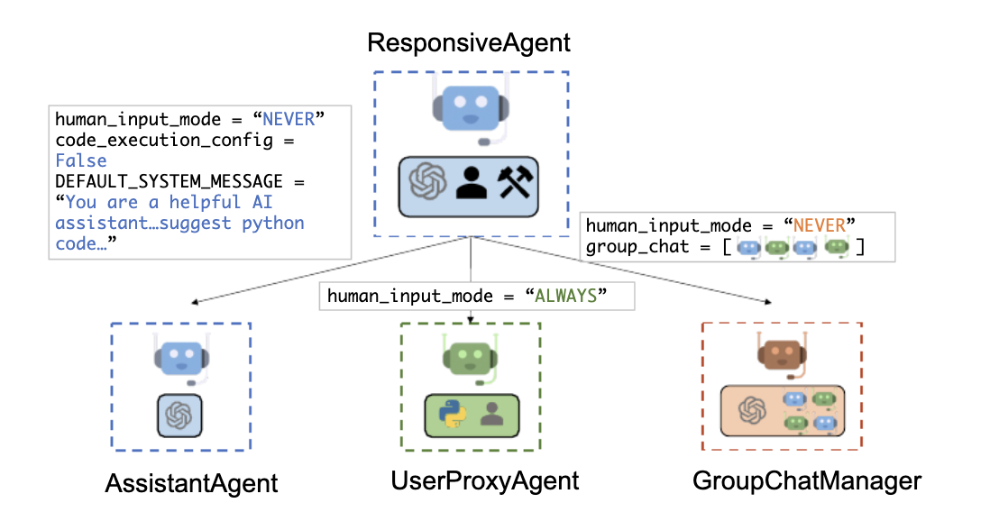
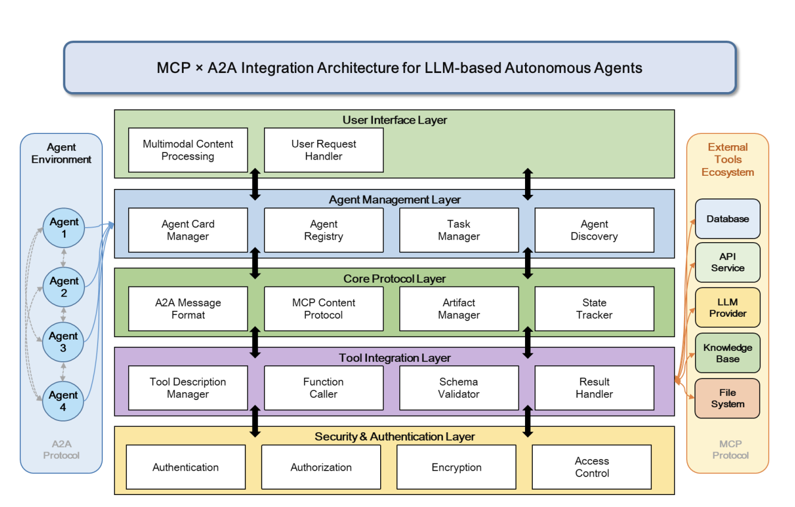

Units 5-7: Collaborative Discussion 2
Topic: Agent Communication Languages - What are the potential advantages and disadvantages of the use of agent communication languages such as KQML? How do they compare with method invocation in Python or Java?
This discussion ran across Units 5-7 and required an initial post, at least two peer responses, and a summary post. References in UoEO Harvard style were required throughout.
Initial Post
Initial Post • Unit 5
The development of artificial intelligence has encouraged a shift from isolated knowledge-based systems towards distributed, cooperative approaches involving multiple intelligent agents. Within this context, the Knowledge Query and Manipulation Language (KQML), developed in the early 1990s, emerged as a key communication protocol. KQML enables autonomous agents to exchange information, coordinate actions, and solve problems collaboratively, regardless of differences in their internal design or implementation (Stryker, no date; Chalupsky et al., 1996).
A practical example of KQML can be seen in agent-based architectures for healthcare decision support systems (DSS), where multiple distributed components must coordinate across organisational boundaries. In such systems, communication is handled by KQML-speaking agents that act between clients (such as hospitals or clinics), data repositories, and intermediary agents responsible for coordination. For instance, a clinical patient record system may interact with external medical knowledge sources through a mediator agent, which manages the exchange of information and ensures that requests are routed appropriately. This type of architecture demonstrates how KQML enables interoperability between heterogeneous systems, allowing components developed using different technologies to communicate through a shared messaging framework.
The healthcare decision support architecture illustrates key advantages of using KQML in distributed systems. One significant benefit is interoperability, as agents can communicate across heterogeneous systems using a shared messaging protocol, allowing clinical systems, data repositories, and external knowledge sources to interact seamlessly. This is particularly valuable in healthcare environments where systems are often developed using different technologies. A second advantage is scalability, as additional agents or services can be integrated without major changes to the overall architecture, supporting the expansion of decision support capabilities over time.
However, the architecture also reveals notable limitations. A key challenge is the reliance on standardisation, as effective communication depends on consistent medical vocabularies and structured guidelines, which are not always fully developed. Additionally, the system introduces increased complexity, particularly in maintaining external knowledge sources and ensuring reliable communication between distributed components (Canfield et al., 2002).
In contrast, method invocation in Python and Java enables components to interact through direct function or method calls, either locally or across distributed systems using approaches such as Remote Method Invocation (RMI) or Remote Procedure Call (RPC). This model allows remote operations to appear as local calls, making it efficient and straightforward to implement. However, it typically requires predefined interfaces and results in tighter coupling between components. By comparison, agent-based approaches such as KQML offer greater flexibility in distributed environments, as agents can operate more autonomously and reduce the need for repeated network communication, although they introduce additional complexity (Tiwari et al., 2010).
References:
- Chalupsky, H., Finin, T., Labrou, Y., Mayfield, J., McKay, D., Shapiro, S. and Wiederhold, G. (1996) An overview of KQML: A knowledge query and manipulation language. Available at: https://www.researchgate.net/publication/2810566_An_Overview_of_KQML_A_Knowledge_Query_and_Manipulation_Language (Accessed: 23 March 2026).
- Canfield, K. et al. (2002) 'Scenario-based analysis of an agent-based architecture for health care decision support systems', IEEE Xplore, Proceedings of the Thirty-First Hawaii International Conference on System Sciences, Kohala Coast, HI, USA. Available at: https://doi.org/10.1109/HICSS.1998.655310
- Stryker, C. (no date) What is AI agent communication? IBM. Available at: https://www.ibm.com/think/topics/ai-agent-communication (Accessed: 20 March 2026).
- Tiwari, V. et al. (2010) 'Computational Analysis of .NET Remoting and Mobile agent in Distributed Environment', IEEE Xplore, 2(6), pp. 2-4. Available at: https://doi.org/10.48550/arXiv.1006.4538
Peer Responses
Unit 6 • My Peer Responses
Peer Response 1 - Response to Lauretta
Hello Lauretta! Your initial post was very insightful, particularly around the emerging communication frameworks such as MCP and A2A.
Building on this, it is useful to consider how these are beginning to be applied in real-world scenarios. For example, agent-to-agent (A2A) communication models are increasingly used in LLM-driven systems where multiple agents collaborate to complete complex workflows, such as coordinating API calls, retrieving external data, and refining outputs iteratively. This is illustrated in frameworks such as AutoGen, where specialised agents - such as assistant, user proxy, and group manager agents - interact through structured communication patterns to coordinate tasks, as shown in Figure 1. In these environments, structured communication protocols allow agents to delegate tasks dynamically, improving modularity and scalability compared to monolithic system designs. This reflects a shift towards more decentralised AI architectures, where agents operate semi-independently while maintaining coordinated behaviour through shared communication standards (Wu et al., 2023; Wooldridge, 2009).

It is important to note that while collaboration between multiple specialised agents enhances problem-solving capabilities, it also increases system complexity, as coordinating communication and ensuring consistent interpretation between agents can be challenging in distributed environments. This is particularly relevant in large-scale systems, where differences in agent behaviour or interpretation may impact reliability and predictability (Jeong, 2025).
References:
- Jeong, C. (2025) 'A Study on the MCP x A2A Framework for Enhancing Interoperability of LLM-based Autonomous Agents', Journal of Intelligence and Information Systems, 31(3), pp. 10–11. Available at: https://doi.org/10.48550/arXiv.2506.01804
- Wooldridge, M. (2009) An Introduction to MultiAgent Systems. 2nd edn. Chichester: Wiley.
- Wu et al. (2023) 'AutoGen: Enabling Next-Gen LLM Applications via Multi-Agent Conversation Framework'. Available at: https://doi.org/10.48550/arXiv.2308.08155
Peer Response 2 - Response to Pitshou
Thank you for your post, Pitshou!
Your point regarding the suitability of ACLs for heterogeneous environments is particularly important, as it highlights one of the key distinctions between agent communication and traditional programming approaches.
In smart city environments, where diverse IoT systems and data platforms must interact, there is a clear need for standardised communication mechanisms to support interoperability across heterogeneous components. Components are often developed across multiple domains, including energy, water, and environmental systems, each with different technologies and data formats (Chalupsky et al., 1996).
In this context, agent communication languages such as KQML provide a suitable approach, offering a shared messaging framework that abstracts away implementation details, allowing agents to interact without requiring direct knowledge of each other's internal structure. This demonstrates the need for standardised communication mechanisms that can operate across heterogeneous systems such as KQML in real-world settings like smart cities (Hamed et al., 2023).
References:
- Chalupsky, H., Finin, T., Labrou, Y., Mayfield, J., McKay, D., Shapiro, S. and Wiederhold, G. (1996) An overview of KQML: A knowledge query and manipulation language. Available at: https://www.researchgate.net/publication/2810566_An_Overview_of_KQML_A_Knowledge_Query_and_Manipulation_Language (Accessed: 23 March 2026).
- Hamed, N., Ganglione, A., Gluhak, A., Rana, O. and Perera, C. (2023) 'Query Interface for Smart City Internet of Things Data Marketplaces: A Case Study', ACM Transactions on Internet of Things, 4(3). Available at: https://dl.acm.org/doi/full/10.1145/3609336
Summary Post
Summary Post • Unit 7
Though I am unable to reflect on every post in this discussion forum, it has been insightful to engage with the range of research surrounding Knowledge Query and Manipulation Language (KQML) and its comparison to method invocation approaches in languages such as Python and Java.
Drawing from my initial post, it is evident that KQML has significant real-world application across multiple domains. My original discussion focused on healthcare Decision Support Systems (DSS), where multi-agent communication protocols can be leveraged to enhance patient care by improving information flow and supporting more efficient organisational processes. This highlights the value of KQML in complex, distributed environments where systems must coordinate across organisational and technological boundaries.
Building on this, Lauretta's contribution introduced the role of emerging frameworks and protocols in advancing agent communication. In particular, the integration of Model Context Protocol (MCP) and agent-to-agent (A2A) communication demonstrates how modern systems are evolving to support scalable and secure interaction between agents. As illustrated in Figure 1, contemporary multi-agent architectures incorporate layered communication structures that enable coordination between agents, external tools, and data sources in a flexible and decentralised manner (Jeong, 2025).

However, reflecting across the discussion, it is also clear that these advantages introduce trade-offs. While KQML and related frameworks enable flexible and semantically rich communication in heterogeneous environments, they also increase system complexity and rely on consistent interpretation between agents. In contrast, method invocation in Python and Java offers a more efficient and predictable approach through direct function calls, but lacks the flexibility required for dynamic, distributed systems (Chalupsky et al., 1996; Tiwari et al., 2010).
Overall, the discussion highlights that KQML is particularly well suited to environments requiring interoperability and autonomy, whereas method invocation remains more appropriate for tightly coupled systems where performance and simplicity are prioritised (Wooldridge, 2009).
References
- Chalupsky, H., Finin, T., Labrou, Y., Mayfield, J., McKay, D., Shapiro, S. and Wiederhold, G. (1996) An overview of KQML: A knowledge query and manipulation language. Available at: https://www.researchgate.net/publication/2810566_An_Overview_of_KQML_A_Knowledge_Query_and_Manipulation_Language (Accessed: 23 March 2026).
- Canfield, K. et al. (2002) 'Scenario-based analysis of an agent-based architecture for health care decision support systems', IEEE Xplore, Proceedings of the Thirty-First Hawaii International Conference on System Sciences, Kohala Coast, HI, USA. Available at: https://doi.org/10.1109/HICSS.1998.655310
- Hamed, N., Ganglione, A., Gluhak, A., Rana, O. and Perera, C. (2023) 'Query Interface for Smart City Internet of Things Data Marketplaces: A Case Study', ACM Transactions on Internet of Things, 4(3). Available at: https://dl.acm.org/doi/full/10.1145/3609336
- Jeong, C. (2025) 'A Study on the MCP x A2A Framework for Enhancing Interoperability of LLM-based Autonomous Agents', Journal of Intelligence and Information Systems, 31(3), pp. 10–11. Available at: https://doi.org/10.48550/arXiv.2506.01804
- Stryker, C. (no date) What is AI agent communication? IBM. Available at: https://www.ibm.com/think/topics/ai-agent-communication (Accessed: 20 March 2026).
- Tiwari, V. et al. (2010) 'Computational Analysis of .NET Remoting and Mobile agent in Distributed Environment', IEEE Xplore, 2(6), pp. 2–4. Available at: https://doi.org/10.48550/arXiv.1006.4538
- Wooldridge, M. (2009) An Introduction to MultiAgent Systems. 2nd edn. Chichester: Wiley.
- Wu et al. (2023) 'AutoGen: Enabling Next-Gen LLM Applications via Multi-Agent Conversation Framework'. Available at: https://doi.org/10.48550/arXiv.2308.08155